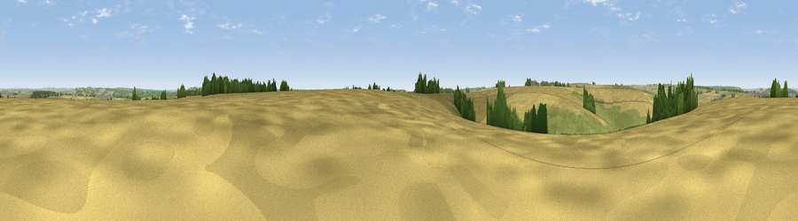

Homington Down
#32370 in England · top 48% of its area beats it · near HomingtonThe view, rendered

A 360° render of this exact spot computed from the terrain model, tree cover and land cover — summer colours, afternoon light, calibrated against photographs of famous viewpoints. Real trees, hedges and buildings will differ in detail.
The panorama
Grey silhouette: terrain skyline in each direction (720 bearings, Earth curvature and refraction included). Dashed green: skyline with trees (+15 m) and buildings (+8 m) as obstacles. Blue strip: how far the ground is visible on each bearing.
Where the view opens
Wedge length = distance to the farthest visible ground on that bearing (vegetation-aware). Rings at 10, 25 and 50 km.
What fills the view
70% cropland · 23% grassland · 7% woodland ·
Angular shares of the visible panorama (visual magnitude), not map area. Landscape diversity 0.35 (0–1 Shannon).
Key numbers
More beautiful places nearby
The staircase of upgrades: each row has a higher view potential than everything closer. Driving times are estimates from straight-line distance, calibrated against real road routing — check an actual route before setting out.
| Place | Direction | Drive | Score |
|---|---|---|---|
| Viewpoint near Coombe Bissett | WNW · 1 km | ~3 min | 43.1 |
| Viewpoint near Coombe Bissett | W · 2 km | ~6 min | 49.9 |
| Clearbury Down | E · 3 km | ~7 min | 53.0 |
| Viewpoint near Bishopstone | W · 4 km | ~10 min | 54.7 |
| Bishopstone Down | NW · 7 km | ~15 min | 57.6 |
| Viewpoint near Laverstock | NE · 8 km | ~16 min | 58.0 |
| Viewpoint near West Grimstead | E · 8 km | ~17 min | 62.7 |
| Marleycombe Hill | WSW · 10 km | ~20 min | 63.3 |
51.02392, -1.82478 · source: osm peak · position refined by local search. Computed location — check access rights before visiting.